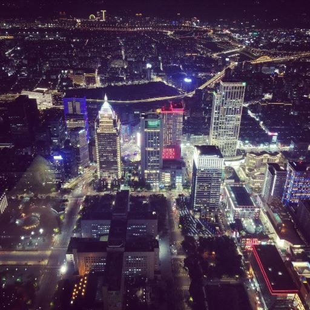
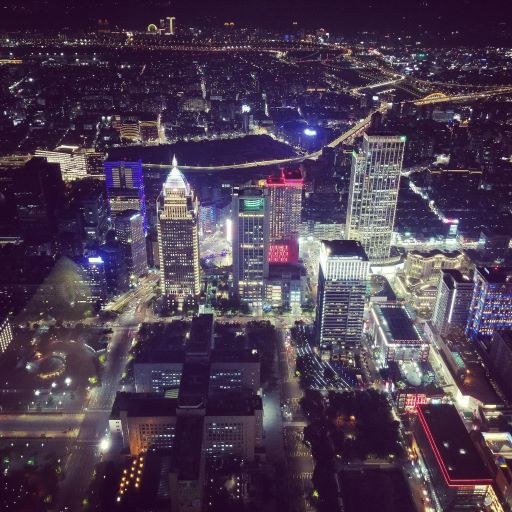
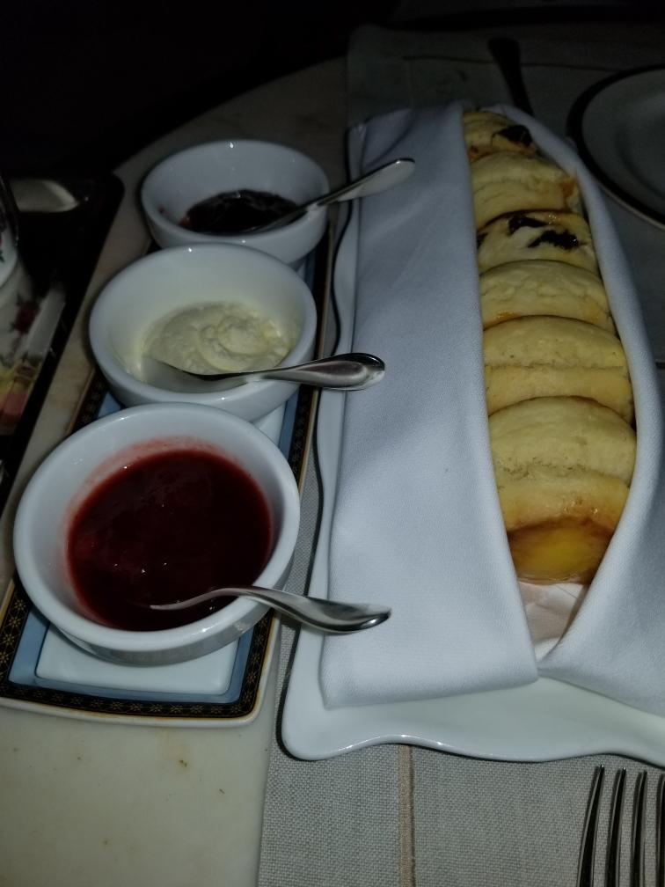
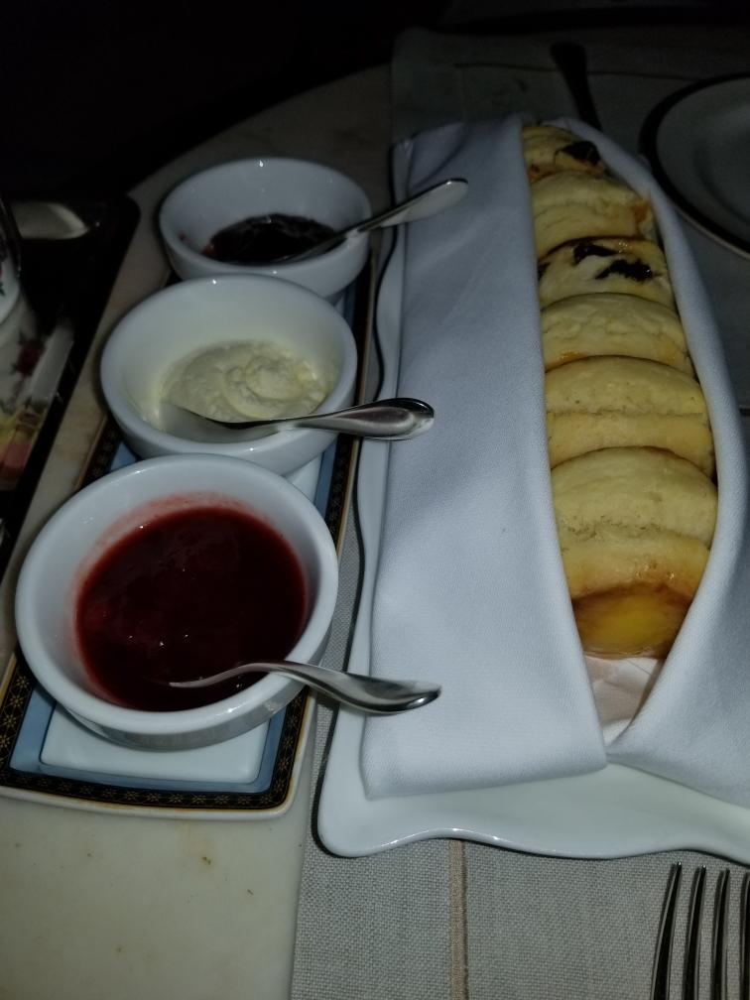
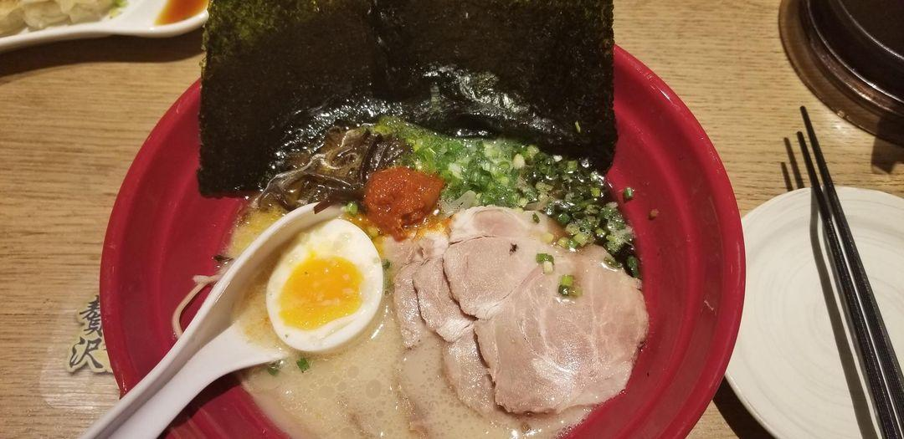
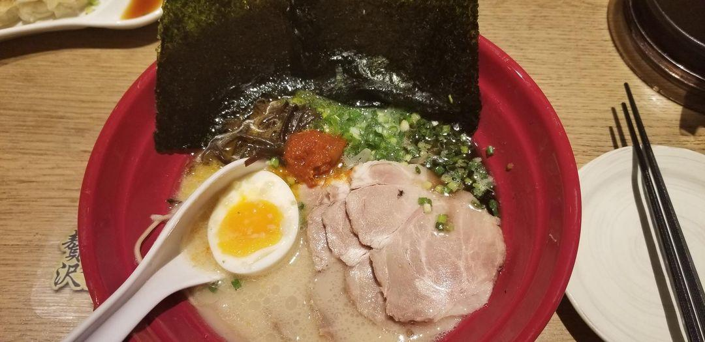

Tong Sui
A variety of tong sui, a Hong Kong seewt soup dessert. Made with Chinese brown sugar stick for the soup base; you can add taro, yams, sweet potatoes, red beans, and many more.

 

 



 
